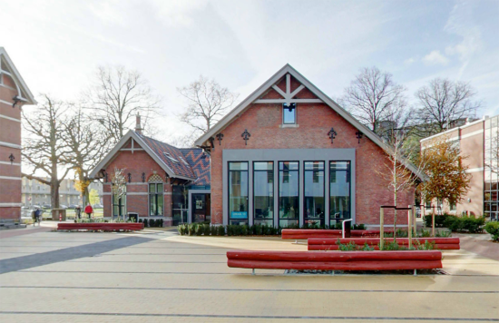
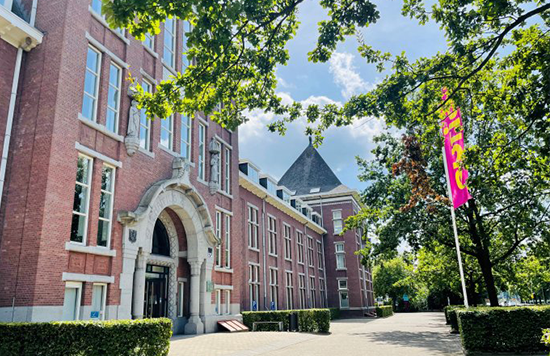
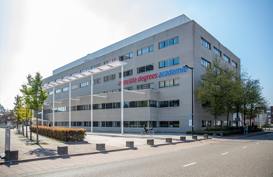
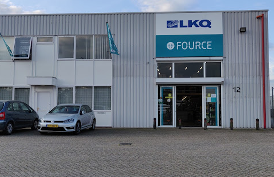
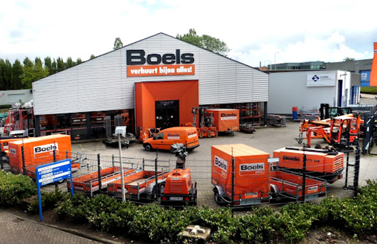

Mijn cv:
CV Mathijs GravemakerMijn diploma's
Mavo ('t Rijks')
Voordat ik aan mijn eerste vervolgopleiding begon, moest ik eerst mijn middelbare schooldiploma behalen. Dit deed ik op RSG 't Rijks. Tijdens mijn eerste jaar volgde ik de gecombineerde mavo/havo-route, waarna ik besloot me volledig te richten op de mavo. Hier heb ik mijn middelbare schooltijd afgerond en de basis gelegd voor mijn verdere opleidingen.
Vestiginsmanager (Curio Breda)
Na het behalen van mijn middelbare schooldiploma heb ik mijn eerste vervolgopleiding afgerond: Vestigingsmanager Groothandel (Crebo-code 25137). Tijdens deze opleiding heb ik me gespecialiseerd in diverse kerntaken, waaronder
Daarnaast heb ik met dit diploma ook een bijbehorend kwalificatiedossier ontvangen: Commercie (Crebo-code 23064).
Associate degree Informatica (Avans)
Momenteel volg ik de Associate Degree Informatica, waar ik word opgeleid tot softwareontwikkelaar. die een belangrijke bijdrage kan leveren bouwen van software voor toepassingen in bijvoorbeeld de zorg, de logistiek en de financiële wereld
Mijn Werkervaring
Fource (stage)
Bij mijn vorige opleiding moest ik stage lopen, wat ik heb gedaan bij Fource. Hier heb ik mijn eerste werkervaring opgedaan en heb ik geleerd hoe een vestiging daadwerkelijk wordt gerund
Boels
Mijn eerste echte baan was bij Boels, een bedrijf dat gereedschappen en machines verhuurt. Hier heb ik geleerd hoe ik klanten zowel face-to-face als telefonisch kan ondersteunen. Daarnaast heb ik inzicht gekregen in de werking van verschillende apparaten.